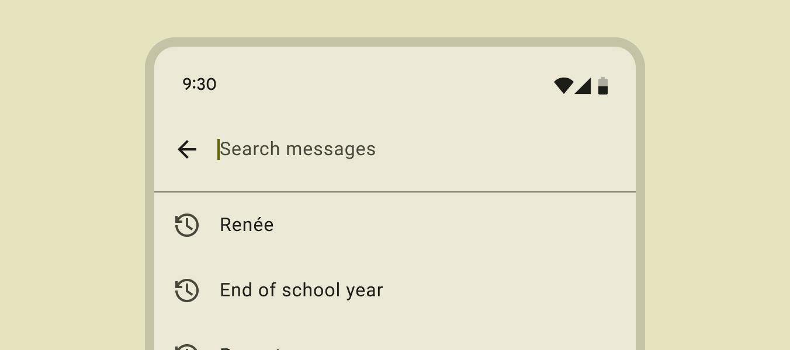

Toolbar
1. La Toolbar com a AppBar (Fonaments)¶
Concepte i Funció¶
L'AppBar (Barra d'Aplicacions) és el component estructural més important a la part superior de qualsevol pantalla Android.
El seu propòsit és: - Identitat: Mostrar el títol de l'aplicació o la pantalla actual. - Navegació: Allotjar el botó "Up" (fletxa enrere) o la icona del Navigation Drawer. - Accions: Contenir les accions més importants de la pantalla (menús).
La Toolbar (proporcionada per la biblioteca AndroidX Material Components) és la implementació moderna i flexible de l'AppBar. A diferència de l'antiga ActionBar nativa, la Toolbar pot ser personalitzada amb facilitat.
La utilitzarem quan volguem personalitzar la appbar que apareix per defecte amb els temes.
Implementació Bàsica¶
Per utilitzar una Toolbar, primer s'ha d'afegir al fitxer XML del layout de l'Activity. Exemple: XML del Layout (activity_main.xml)
<LinearLayout
xmlns:android="http://schemas.android.com/apk/res/android"
android:layout_width="match_parent"
android:layout_height="match_parent"
android:orientation="vertical">
<androidx.appcompat.widget.Toolbar
android:id="@+id/my_toolbar"
android:layout_width="match_parent"
android:layout_height="?attr/actionBarSize"
android:background="?attr/colorPrimary"
android:theme="@style/ThemeOverlay.AppCompat.Dark.ActionBar" />
<TextView
android:layout_width="wrap_content"
android:layout_height="wrap_content"
android:text="El contingut de l'Activity va aquí"
android:padding="16dp" />
</LinearLayout>
Exemple: Configuració a l'Activity (Kotlin)
import androidx.appcompat.app.AppCompatActivity
class MainActivity : AppCompatActivity() {
override fun onCreate(savedInstanceState: Bundle?) {
super.onCreate(savedInstanceState)
setContentView(R.layout.activity_main)
val toolbar = findViewById<Toolbar>(R.id.my_toolbar)
// 1. Configura la Toolbar com l'Action Bar del sistema
setSupportActionBar(toolbar)
// Opcional: Estableix un títol
supportActionBar?.title = "La Meva App"
}
}
2. Afegir Menús a la Toolbar¶
Definició del Menú¶
Els ítems del menú es defineixen en un fitxer XML separat a res/menu/.
Exemple: Recurs de Menú (res/menu/main_menu.xml)
<menu xmlns:android="http://schemas.android.com/apk/res/android"
xmlns:app="http://schemas.android.com/apk/res-auto">
<item
android:id="@+id/action_cercar"
android:icon="@drawable/ic_search"
android:title="Cercar"
app:showAsAction="ifRoom" />
<item
android:id="@+id/action_configuracio"
android:title="Configuració"
app:showAsAction="never" />
</menu>
Inflació¶
El procés d'inflar (carregar) el menú XML a la Toolbar es fa sobreescrivint el mètode onCreateOptionsMenu() de l'Activity. Exemple: Inflació del Menú (Kotlin)
class MainActivity : AppCompatActivity() {
// ... onCreate ...
override fun onCreateOptionsMenu(menu: Menu?): Boolean {
// 1. Carrega el recurs de menú a l'Activity
menuInflater.inflate(R.menu.main_menu, menu)
return true // Retorna true per mostrar el menú
}
// ...
}
Gestió de Clics i Prioritat¶
Per respondre a les interaccions de l'usuari amb els ítems del menú, s'ha de sobreescriure el mètode onOptionsItemSelected(). Exemple 2.3: Gestió de Clics (Kotlin)
// ...
override fun onOptionsItemSelected(item: MenuItem): Boolean {
return when (item.itemId) {
R.id.action_cercar -> {
// Lògica per a l'acció de cercar
Toast.makeText(this, "S'ha premut Cerca", Toast.LENGTH_SHORT).show()
true
}
R.id.action_configuracio -> {
// Lògica per anar a Configuració
Toast.makeText(this, "Obrint Configuració...", Toast.LENGTH_SHORT).show()
true
}
else -> super.onOptionsItemSelected(item)
}
}
}
3. Gestió de la Navegació a l'AppBar¶
El Botó "Up"¶
El botó "Up" (representat típicament per una fletxa cap a l'esquerra: $\leftarrow$) és una convenció de disseny que permet a l'usuari navegar cap amunt en la jerarquia lògica de l'aplicació, fins a la pantalla pare.
És diferent del botó "Enrere" del sistema, que navega pel registre històric (back stack).
Integració de la Navegació¶
Quan s'utilitza la Toolbar com a Action Bar, el sistema pot gestionar automàticament el comportament del botó "Up" basant-se en la definició de l'Activity al fitxer AndroidManifest.xml (especificant l'Activity pare amb android:parentActivityName).
Si no s'utilitza la Navigation Library, es pot habilitar el botó manualment i gestionar el seu clic:
Exemple: Habilitació del Botó "Up" (Kotlin)
class DetailActivity : AppCompatActivity() {
override fun onCreate(savedInstanceState: Bundle?) {
super.onCreate(savedInstanceState)
// ...
// Habilita el botó "Up" a la Toolbar
supportActionBar?.setDisplayHomeAsUpEnabled(true)
}
// Gestió manual del clic al botó "Up"
override fun onOptionsItemSelected(item: MenuItem): Boolean {
return when (item.itemId) {
android.R.id.home -> {
// El mètode navigateUpFromSameTask() de l'Activity Manager
// compleix la funció del botó "Up"
NavUtils.navigateUpFromSameTask(this)
true
}
else -> super.onOptionsItemSelected(item)
}
}
}
4. Actualització Dinàmica dels Menús¶
De vegades, l'estat d'un ítem de menú (p. ex., canviar una icona de "No Favorit" a "Favorit") ha de canviar mentre l'Activity està oberta.
Invalidació del Menú¶
Per forçar que el sistema torni a cridar a onCreateOptionsMenu() i recreï completament el menú, s'utilitza invalidateOptionsMenu().
Això és útil si la visibilitat o el títol d'alguns ítems depèn d'un estat global que acaba de canviar. Exemple: Forçar la Recreació del Menú (Kotlin)
// Després d'un canvi d'estat a la nostra Activity...
fun onDataUpdated() {
// ...
// Crida a invalidateOptionsMenu() per recrear el menú amb les noves dades
invalidateOptionsMenu()
}
Preparació del Menú¶
El mètode onPrepareOptionsMenu() es crida just abans que es mostri el menú. Aquest és el lloc ideal per canviar la visibilitat o l'aparença dels ítems de menú existents sense recrear tota l'estructura.
Exemple: Preparació Dinàmica (Kotlin)
// Variable d'estat a l'Activity
private var isUserLoggedIn = false
override fun onPrepareOptionsMenu(menu: Menu?): Boolean {
val loginItem = menu?.findItem(R.id.action_login)
val logoutItem = menu?.findItem(R.id.action_logout)
// Mostra l'opció de login si l'usuari no està connectat, i viceversa
loginItem?.isVisible = !isUserLoggedIn
logoutItem?.isVisible = isUserLoggedIn
return super.onPrepareOptionsMenu(menu)
}
5. Action Views¶
Vegeu documentació per a detalls: https://developer.android.com/develop/ui/views/components/appbar/action-views
Action Views¶
Un Action View és un widget personalitzat (per exemple, un EditText, un SearchView, o un ProgressBar) que s'associa a un ítem de menú. En lloc de mostrar la icona i el text habituals, l'ítem de menú mostra el widget de l'Action View directament a la Toolbar. Característiques: - Widget Incrustat: El SearchView és l'exemple més comú. Quan l'usuari el selecciona, el widget s'expandeix a la barra d'aplicacions, permetent interaccions complexes (escriure, enviar) sense canviar d'Activity o mostrar un diàleg.
-
Implementació: Es defineix mitjançant l'atribut app:actionViewClass o android:actionLayout a l'XML del menú. També es pot inflar manualment en el mètode onCreateOptionsMenu().
-
Gestió de Col·lapse: Quan l'Action View s'expandeix, altres accions de la Toolbar es poden col·lapsar (amagar). Pots implementar la interfície MenuItem.OnActionExpandListener per gestionar esdeveniments quan l'acció s'expandeix o es col·lapsa.
| Searchview sense focus | Searchview amb focus |
|---|---|
 |
 |
Resum de les funcion:¶
- onCreateOptionsMenu(): Inflar el menú
- onOptionsItemSelected(): Gestionar clics
- onPrepareOptionsMenu(): Actualitzar dinàmicament
- invalidateOptionsMenu(): Forçar recreació del menú
Utilitza AppBarLayout per a comportaments avançats (amagar/mostrar en scroll) (veure a continuació)
6. Estil i Comportament Avançat (Material Design)¶
Estil¶
L'estil de l'AppBar (colors, fons, elevació) es controla principalment a través del Tema de l'aplicació. Les propietats clau que afecten l'AppBar són:
-
colorPrimary: El color de fons principal de la barra.
-
colorPrimaryVariant: S'utilitza sovint per a la Barra d'Estat (Status Bar).
Comportament Avançat amb CoordinatorLayout¶
Per a les aplicacions amb un disseny més sofisticat, la Toolbar s'integra amb un CoordinatorLayout i un AppBarLayout per crear efectes de desplaçament dinàmics.
Exemple d'Efecte de Desplaçament:¶
Si col·loques la Toolbar dins d'un AppBarLayout i el contingut desplaçable (com un RecyclerView) també dins del CoordinatorLayout, pots utilitzar les scroll flags de l'AppBarLayout:
<androidx.coordinatorlayout.widget.CoordinatorLayout>
<com.google.android.material.appbar.AppBarLayout
android:layout_width="match_parent"
android:layout_height="wrap_content">
<androidx.appcompat.widget.Toolbar
...
app:layout_scrollFlags="scroll|enterAlways" /> </com.google.android.material.appbar.AppBarLayout>
<androidx.recyclerview.widget.RecyclerView
...
app:layout_behavior="@string/appbar_scrolling_view_behavior" />
</androidx.coordinatorlayout.widget.CoordinatorLayout>
scroll: Fa que la barra es mogui fora de la pantalla quan l'usuari es desplaça cap avall.
enterAlways: Fa que la barra torni a aparèixer tan aviat com l'usuari comença a desplaçar-se cap amunt, fins i tot lleugerament.